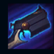
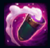
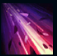
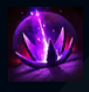
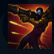

Jhin
| Jhin The Virtuoso | |
|---|---|
| Release date | 01.02.2016 |
| Class | Marksman, Catcher |
| Positions | Bottom |
| Resource | Mana |
| Range type | Ranged |
| Adaptive type | Physical |
| Base statistics | |||
| Health | 585 – 2166 | Mana | 300 – 1150 |
| Health regen. | 3.75 – 13.1 |
Mana regen. | 6 – 19.6 |
| Armor | 24 – 83.5 | Attack damage | 59 – 138.9 |
| Magic resist. | 30 – 38.5 | Crit. damage | 175% |
| Move. speed | 330 | Attack range | 550 |
Jhin este un psihopat meticulos, pentru care crima înseamnă artă. Multă vreme a fost ținut prizonier într-o temniță ioniană, dar în cele din urmă a fost eliberat de câțiva membri din consiliul conducător al Ioniei și a ajuns să lucreze ca asasin pentru acest grup secret. Folosindu-și arma pe post de pensulă, Jhin creează tablouri de o brutalitate sublimă, spre groaza victimelor și a celor din jur. Îi face o plăcere crudă să pună în scenă spectacole macabre, fiind astfel unealta perfectă pentru a transmite cel mai puternic mesaj: teroarea. |  |
ȘOAPTĂ Tunul de mână al lui Jhin, ''Șoaptă'', este un instrument de mare precizie, creat cu scopul de a provoca daune enorme. Rata sa de foc este fixă și are doar patru gloanțe. Jhin aplică o doză de magie neagră asupra ultimului glonț, transformându-l într-o lovitură critică garantată ce provoacă daune bonus în funcție de viața lipsă a țintei. De fiecare dată când ''Șoapta'' provoacă o lovitură critică, Jhin primește un bonus scurt la viteza de mișcare. |
||
|---|---|---|---|---|
 |
DANSUL SUBLIMEI DISTRUGERI Jhin aruncă un cartuș magic către un inamic. Acesta poate lovi până la patru ținte, iar daunele cresc de fiecare dată când face o victimă. |
|||
 |
DRAMĂ ÎN DOUĂ ACTE Jhin își armează pușca și trage un singur glonț de la o distanță incredibilă. Glonțul trece prin minioni și monștri, dar se oprește când lovește un campion. Dacă ținta a fost lovită recent de către aliații lui Jhin, de capcanele lui sau de el, atunci este imobilizată. |
|||
|  |
PUBLIC CAPTIV Jhin plasează o capcană-lotus invizibilă, care se activează atunci când cineva trece peste ea. Capcana încetinește inamicii din apropiere, după care explodează într-o furtună de petale ascuțite și provoacă daune. ''Frumusețe prin moarte'' – când Jhin ucide un campion inamic, lângă cadavrul acestuia apare o capcană-lotus. |
|||
 |
PUNCT CULMINANT Jhin se pregătește, apoi transformă ''Șoapta'' într-un mega-tun de umăr care poate trage 4 gloanțe de la o distanță imensă. Gloanțele trec prin toți minionii și monștrii, dar se opresc la primul campion lovit. Aceste lovituri scad viteza de mișcare a inamicilor loviți și le provoacă daune bonus în funcție de viața lipsă. Cel de-al patrulea glonț este extrem de puternic și făurit cu măiestrie, provocând garantat o lovitură critică. |